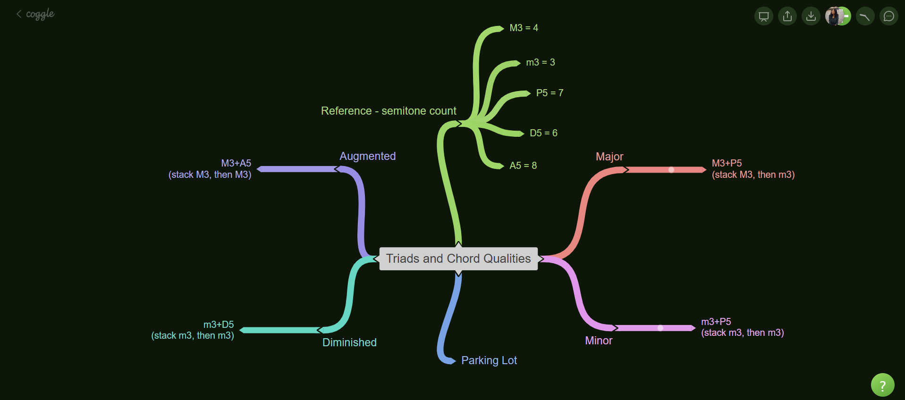
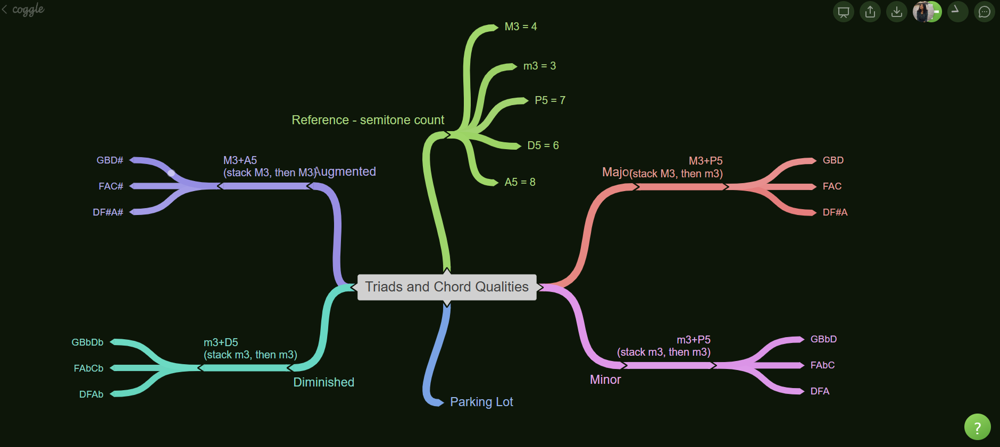
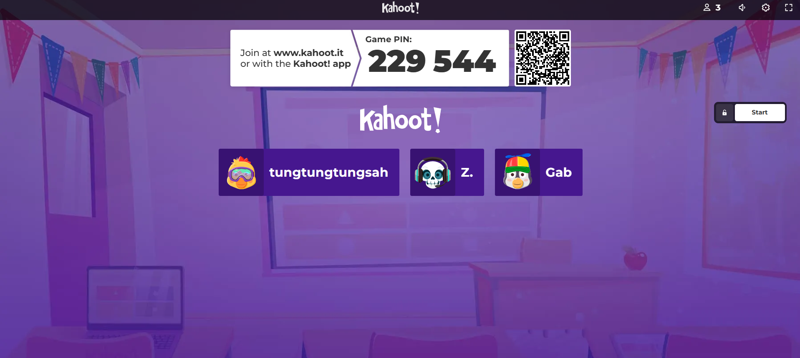
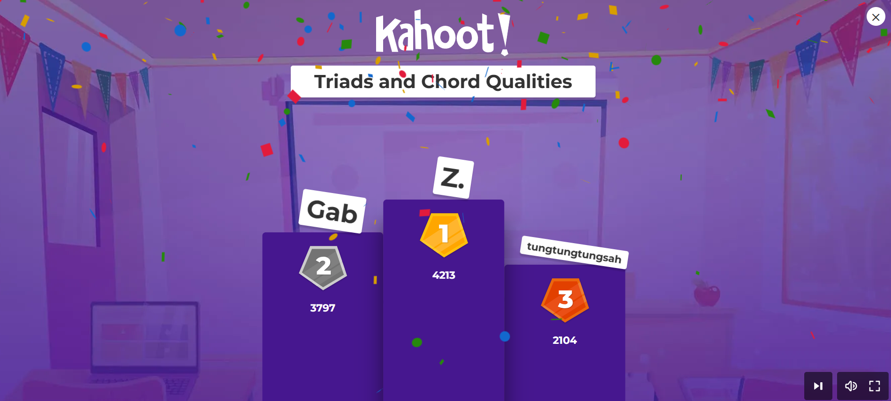
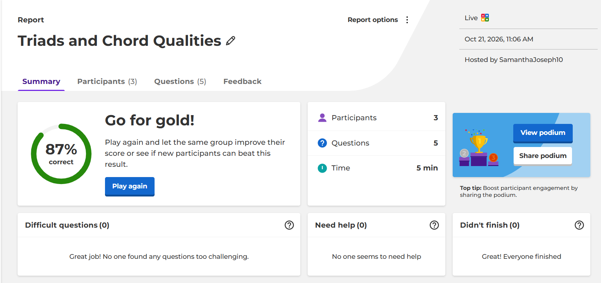
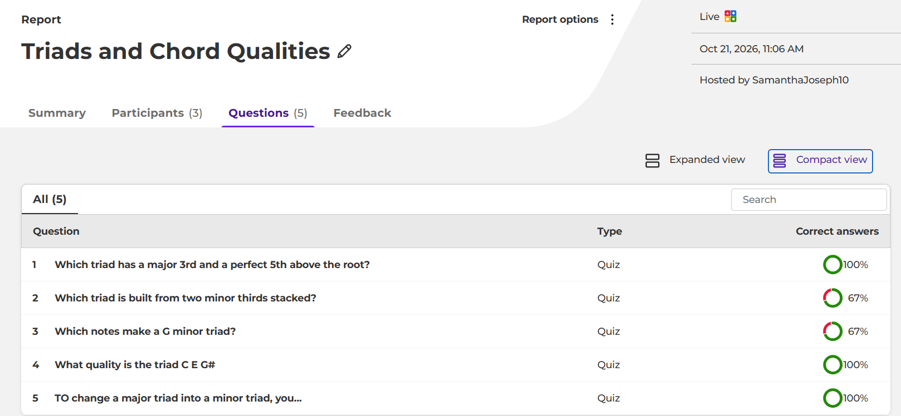
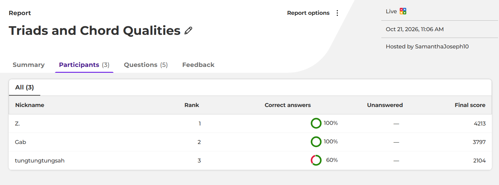

Section C - Technology Integration
Caption
This section highlights how technology supports teaching and learning by making thinking visible, feedback immediate and reflection purposeful. Coggle, used in the lesson, was significant because collaborative concept mapping clarified relationships between ideas and revealed students’ understanding as it developed, supporting visual and collaborative learners. Kahoot provided instant, individual evidence of learning, informing responsive teaching while motivating competitive learners. PowerPoint, used for the reflection, allowed me to communicate my analysis through visuals and voice together, deepening critical reflection. Integrating these tools reflects the evolving role of digital tools in meeting the diverse needs of 21st-century learners.
Word count: 96Lesson Plan with Technology Use and Supporting Resources
Links to Unit and Lesson Plans
- Unit Plan (PDF)
- Lesson Plan (PDF)
Links to Lesson Media
- Coggle Concept Map: Triads and Chord Qualities (Coggle)
- Kahoot Quiz: Triads and Chord Qualities (Kahoot)
Evidence of Lesson
Coggle Starter Map

Completed Coggle Map

Kahoot Game PIN Screen

Kahoot Podium Results

Kahoot Report: Summary

Kahoot Report: Questions

Kahoot Report: Participants

Justification of Tools
For my lesson using technology integration, I chose two digital tools, Coggle for collaborative concept mapping and Kahoot for digital assessment, in a single 35-minute lesson on chord qualities taught to three Form 4 CSEC Music students. I argue that each tool was chosen to meet a specific learning need in the lesson, not for novelty, and that together they fit the content, the teaching approach and the time available. This alignment of technology, pedagogy and content is the central idea of the technological pedagogical content knowledge (TPACK) framework (Mishra & Koehler, 2006).
The lesson objectives asked students to define a triad, to construct major, minor, diminished and augmented triads on the roots G, F and D, to explain how raising or lowering the third or fifth changes a triad’s quality, to play and identify the qualities by ear, and to collaborate respectfully. The students already understood intervals, interval qualities and the circle of fifths. The conceptual core of the lesson is relational: all four qualities share a root and differ only by a semitone or two in the third or fifth. Two needs followed from this. Students needed a way to see those relationships and to build them together, and I needed a quick and reliable way to check understanding in a period where only about five minutes could be spared for assessment.
Coggle met the first need. A concept map represents knowledge as concepts joined by labelled relationships, and it supports meaningful learning because learners must connect new ideas to what they already know (Novak & Cañas, 2006). My starter map placed “Triads and Chord Quality” at the centre, with four branches, one for each quality, each showing its interval structure, for example major as a major third plus a perfect fifth. Students could therefore link the new idea of chord quality directly to the interval knowledge they already had. The branching layout also puts the four qualities side by side, so that what stays the same (the root) and what changes (the third or the fifth) can be seen at a glance. Presenting words in a spatial layout, with colour used to mark the note that changes, draws on both verbal and visual channels, which dual coding theory and multimedia learning research suggest strengthens understanding (Mayer, 2009; Paivio, 1986).
Coggle was also chosen because it supports collaboration in real time. From a social constructivist perspective, learners build understanding through interaction with others (Vygotsky, 1978). Each student was assigned a different root from neighbouring keys on the circle of fifths, then spelled the four triads on that root and checked a classmate’s branch by counting semitones. The pattern therefore repeated across keys, and the students acted as resources for one another. Because the map is shared, I could watch contributions appear and correct a misconception, such as a wrongly spelled diminished fifth, while the task was still under way. A paper worksheet could not offer live peer checking or immediate teacher monitoring in the same way. The tool does more than substitute for paper, because live co-editing and instant feedback change how the task works.
Kahoot met the second need. Black and Wiliam (1998) reviewed a large body of evidence and concluded that frequent, informative feedback to teachers and students raises achievement, and a short quiz at the end of the lesson is a practical way to obtain it. Kahoot gives each student’s answer instantly and produces a report showing which questions were missed. My five questions were mapped to Objectives 1 to 3 through a table of specification, so the report shows which objective needs re-teaching, and any item missed by two or more students would begin the next lesson. The quiz also acts as retrieval practice: answering questions about material just learned improves later retention (Roediger & Karpicke, 2006). Automatic marking saves time, and students joining with a game PIN on their own devices keeps the quiz within five minutes. The game format adds a low-stakes element of challenge, although with only three students I would frame it as a shared challenge and rely mainly on the data it produces.
The short period made one more consideration important. Cognitive load theory holds that working memory is limited, so learning suffers when too many new demands compete at once (Sweller, 1988). A lesson that introduced both new content and new software would risk exactly that. Choosing tools the students have already used reduces the extraneous load of learning an interface, so their effort goes to chords. I also prepared the starter map and quiz beforehand, had devices ready, and time-boxed each tool, with about nine minutes for Coggle and five for Kahoot.
I considered other tools on the course list and rejected them for good reasons. Audacity could record chords for comparison, but recording, playing back and editing would use more time than the lesson allowed, and the aural comparison is done more efficiently live on the keyboard. A shared board such as Padlet encourages collaboration but offers less structure for showing how each quality relates to its intervals. A form-based quiz could collect answers, but it gives less immediate whole-class feedback during the lesson than Kahoot does.
Both tools carry risks. They depend on reliable internet and working devices, and free plans can limit features, so I prepared a printed template and mini whiteboards as a back-up, and students’ work is identified by first names only. These steps also address equity, since not every learner has a dependable device or data.
In conclusion, Coggle and Kahoot were selected because each does a particular job well in this lesson. Coggle makes the structure of chord qualities visible and lets students construct and check it together, and Kahoot supplies fast, usable evidence of learning in very little time. Together, and with careful preparation, they support the lesson’s objectives within a 35-minute period, and the lesson remains centred on hearing and playing music.
References
Black, P., & Wiliam, D. (1998). Assessment and classroom learning. Assessment in Education: Principles, Policy & Practice, 5(1), 7–74.
Mayer, R. E. (2009). Multimedia learning (2nd ed.). Cambridge University Press.
Mishra, P., & Koehler, M. J. (2006). Technological pedagogical content knowledge: A framework for teacher knowledge. Teachers College Record, 108(6), 1017–1054.
Novak, J. D., & Cañas, A. J. (2006). The theory underlying concept maps and how to construct and use them (Technical Report IHMC CmapTools 2006-01). Florida Institute for Human and Machine Cognition.
Paivio, A. (1986). Mental representations: A dual coding approach. Oxford University Press.
Roediger, H. L., & Karpicke, J. D. (2006). Test-enhanced learning: Taking memory tests improves long-term retention. Psychological Science, 17(3), 249–255.
Sweller, J. (1988). Cognitive load during problem solving: Effects on learning. Cognitive Science, 12(2), 257–285.
Vygotsky, L. S. (1978). Mind in society: The development of higher psychological processes. Harvard University Press.